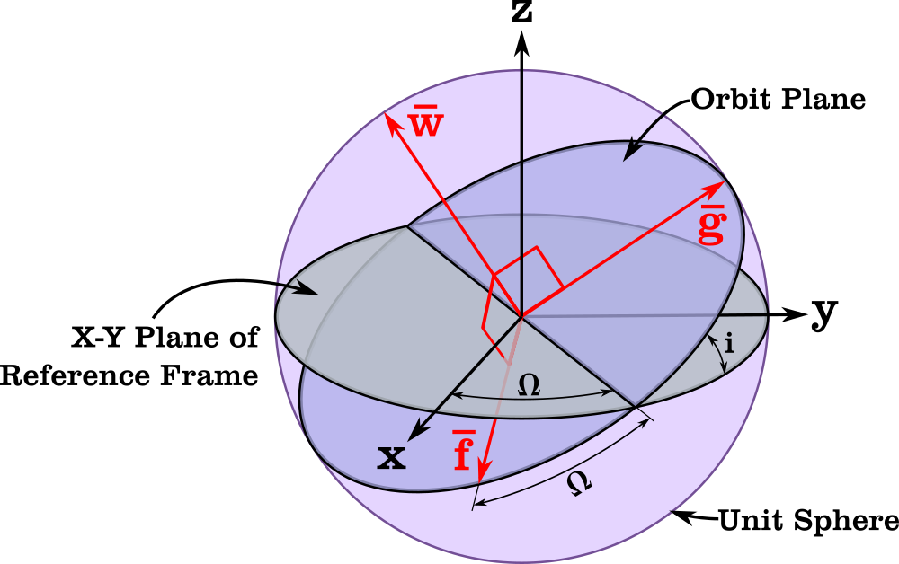

Modified Equinoctial
The Modified Equinoctial Orbital Elements provide a set of parameters that describe an object's orbit without the singularities that arise in Keplerian elements (e.g., near-circular or equatorial orbits). These elements are particularly useful in numerical orbit propagation and optimization because they remain well-defined for nearly all types of orbits (with the exception of retro-grade orbits). They are an alternative to classical orbital elements, offering advantages in continuous, high-precision computations, especially when dealing with low-eccentricity orbits.
This library provides two variants of Modified Equinoctial coordinates:
- ModEq: Uses semi-parameter (p) as the size parameter
- ModEqN: Uses mean motion (η) as the size parameter instead of semi-parameter

Modified Equinoctial Orbital Element Frame [1]Components
ModEq (Semi-Parameter Variant)
The ModEq coordinate type uses semi-parameter and consists of six elements:
Orbital Shape and Size
- semi-latus rectum (p): A measure of the orbit's size, similar to the semi-major axis, but defined as p=a*(1-e^2). It ensures well-defined behavior even for highly elliptical or circular orbits.
- first component of eccentricity (f): First of two parameters that replace the scalar eccentricity. f=e*cos(ω + Ω) These components prevent singularities when the eccentricity is zero
- second component of eccentricity (g): Second of two parameters that replace the scalar eccentricity. g=e*sin(ω + Ω)
Orbital Orientation
- first component of inclination (h): First of two parameters that replace the scalar inclination. h=tan(i/2)*cos(Ω) These components ensures the elements remain well-defined for equatorial orbits
- second component of inclination (k): Second of two parameters that replace the scalar inclination. h=tan(i/2)*sin(Ω)
Position within the Orbit
- longitude of periapsis (L): This replaces true anomaly and combines information about the satellite's position within the orbit. L=ω + Ω + f
ModEqN (Mean Motion Variant)
The ModEqN coordinate type uses mean motion instead of semi-parameter:
Orbital Shape and Size
- mean motion (η): The angular rate of motion for a circular orbit with the same period, defined as η = √(μ/a³). This provides a direct measure of orbital period.
- first component of eccentricity (f): Same as ModEq - f=e*cos(ω + Ω)
- second component of eccentricity (g): Same as ModEq - g=e*sin(ω + Ω)
Orbital Orientation
- first component of inclination (h): Same as ModEq - h=tan(i/2)*cos(Ω)
- second component of inclination (k): Same as ModEq - h=tan(i/2)*sin(Ω)
Position within the Orbit
- longitude of periapsis (L): Same as ModEq - L=ω + Ω + f
References
[1]: https://degenerateconic.com/modified-equinoctial-elements.html [2]: https://link.springer.com/article/10.1007/BF01227493 [3]: https://spsweb.fltops.jpl.nasa.gov/portaldataops/mpg/MPG_Docs/Source%20Docs/EquinoctalElements-modified.pdf